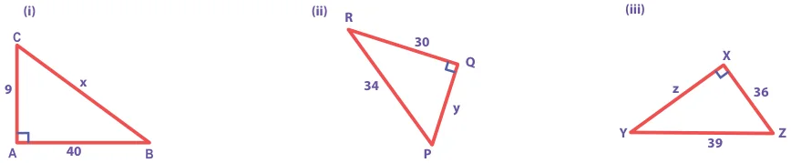
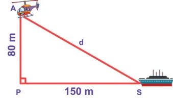
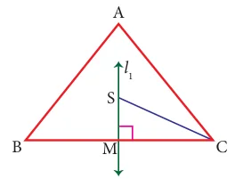
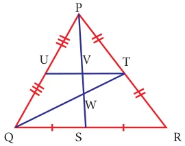
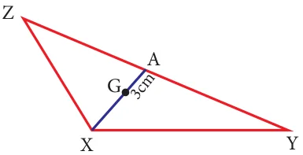
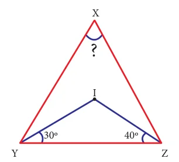

- Fill in the blanks:
- If in a \(\triangle PQR\), \(PR^{2} = PQ^{2} + QR^{2}\), then the right angle of \(\triangle PQR\) is at the vertex \(\underline{\qquad}\).
- If '\(l\)' and '\(m\)' are the legs and '\(n\)' is the hypotenuse of a right angled triangle then, \(l^{2} = \underline{\qquad}\).
- If the sides of a triangle are in the ratio 5:12:13 then, it is \(\underline{\qquad}\).
- The medians of a triangle cross each other at \(\underline{\qquad}\).
- The centroid of a triangle divides each medians in the ratio \(\underline{\qquad}\).
- Say True or False.
- 8, 15, 17 is a Pythagorean triplet.
- In a right angled triangle, the hypotenuse is the greatest side.
- In any triangle the centroid and the incentre are located inside the triangle.
- The centroid, orthocentre, and incentre of a triangle are collinear.
- The incentre is equidistant from all the vertices of a triangle.
- Check whether given sides are the sides of right-angled triangles, using Pythagoras theorem.
- 8,15,17
- 12,13,15
- 30,40,50
- 9,40,41
- 24,45,51
- Find the unknown side in the following triangles.

- An isosceles triangle has equal sides each 13 cm and a base 24 cm in length. Find its height.
- Find the distance between the helicopter and the ship.

- In triangle ABC, line \(l_{1}\) is a perpendicular bisector of BC. If BC=12 cm, SM=8 cm, find CS.

- Identify the centroid of \(\triangle PQR\).

- Name the orthocentre of \(\triangle PQR\).

- In the given figure, A is the midpoint of YZ and G is the centroid of the triangle XYZ. If the length of GA is 3 cm, find XA.

- If I is the incentre of \(\triangle XYZ\), \(\angle IYZ = 30^{\circ}\) and \(\angle IZY = 40^{\circ}\), find \(\angle YXZ\).

Objective Type Questions

- If \(\triangle GUT\) is isosceles and right angled, then \(\angle TUG\) is \(\underline{\qquad}\).
- \(30^{\circ}\)
- \(40^{\circ}\)
- \(45^{\circ}\)
- \(55^{\circ}\)
- The hypotenuse of a right angled triangle of sides 12cm and 16cm is \(\underline{\qquad}\).
- 28 cm
- 20 cm
- 24 cm
- 21 cm
- The area of a rectangle of length 21cm and diagonal 29cm is \(\underline{\qquad}\).
- \(609\ \text{cm}^{2}\)
- \(580\ \text{cm}^{2}\)
- \(420\ \text{cm}^{2}\)
- \(210\ \text{cm}^{2}\)
- The sides of a right angled triangle are in the ratio 5:12:13 and its perimeter is 120 units then, the sides are \(\underline{\qquad}\).
- 25, 36, 59
- 10,24,26
- 36, 39, 45
- 20,48,52